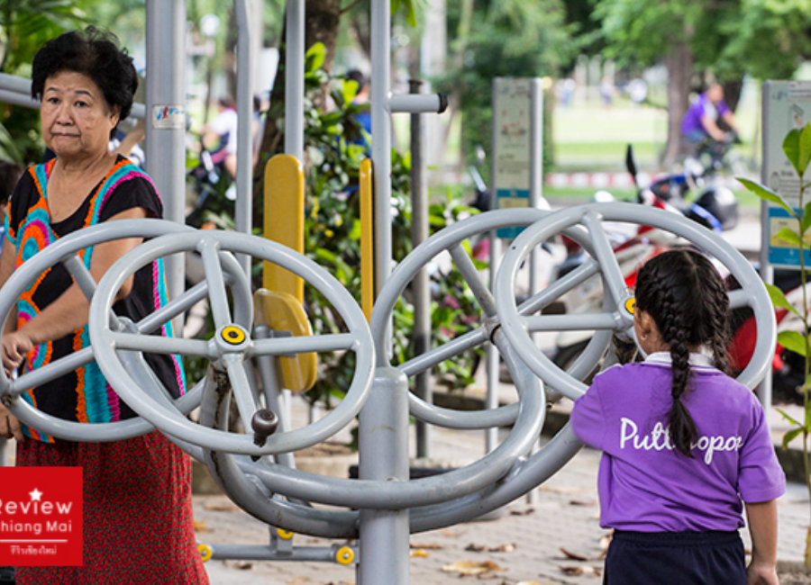

ลานออกกำลังกาย มหาวิทยาลัยเชียงใหม่
สำหรับท่านที่ชอบออกกำลังกายแบบโอเพ่นแอร์ก็ต้องที่นี่เลย ลานออกกำลังกาย มหาวิทยาลัยเชียงใหม่ ที่เปิดให้บริการตลอดเวลา โดยเครื่องออกกำลังกายของที่นี่ก็จะเป็นแบบเหล็ก ใครสะดวกตอนไหนก็สามารถไปเล่นได้ทุกเมื่อเชื่อวัน และที่สำคัญไม่เสียค่าบริการอีกด้วย ท่านไหนสนใจก็หอบลูกจูงหลานไปออกกำลังกายด้วยกันได้ เพราะมีเครื่องออกกำลังกายที่เล่นได้ทุกเพศ ทุกวัย
ที่ตั้ง : หน้าโรงยิมกลางมหาวิทยาลัยเชียงใหม่
เวลาเปิดให้บริการ : ตลอด 24 ชั่วโมง
อัตราค่าบริการ : ฟรี
